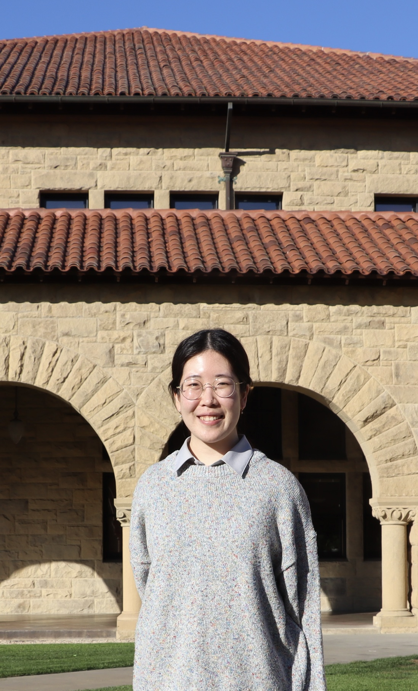

About

Hi! I'm Seo-young Lee, a first-year PhD student at Stanford Linguistics.
I like to wonder about meaning — how much of it comes from the meaning of words and their organization in sentences, and how much comes from beyond them.
As complicated as meaning is, I believe there is systematicity to how it is composed and conveyed, and my goal as a researcher is to discover and formalize such systematicity.
This means that my research mainly lies within formal semantics, formal pragmatics, and their interface.
Some of the specific topics I have looked at include question polarity in both polar and constituent ("wh-") questions,
high negated questions (HNQs), and deontic possibility-to-necessity inference.
Before coming to Stanford, I received my BA in English, BS in Statistics, and MA in English Linguistics (advisor: Dr. Jungmee Lee) at Seoul National University.
You can contact me at sylee423 [at] stanford [dot] edu.
Research
Papers
Lee, S. 2025. You can leave your dog outside, but do you have to?: An RSA approach. Proceedings of Sinn und Bedeutung, 29, 870–882.
Lee, S. 2025. A Study on the Semantics and Pragmatics of Bias in High Negated Questions. MA thesis, Seoul National University.
Han, K., Lee, B., Lee, D., Heo, G., Oh, J., Lee, S., Apio, C., & Park, T. 2024. Forecasting the spread of COVID-19 based on policy, vaccination, and Omicron Data. Scientific Reports, 14(1).
Conference presentations
2025
Lee, S. A New View on NAmE High Negated Questions: Experimental Evidence and Analysis.
Sinn und Bedeutung 30 (SuB30), Goethe University, Frankfurt am Main, Germany, September 23-27 (talk).
2024
Lee, S. You can leave your dog outside, but do you have to?: An RSA approach.
Sinn und Bedeutung 29 (SuB29), Consorzio Universitario Mediterraneo Orientale, Noto, Italy, September 17-19 (talk).
GitHub
You can find my GitHub page here.
CV
You can find my CV here.
Personal
Name
Pronunciation
My name is written as 이서영 in Hangul, the Korean script. A rough IPA transcription of my given name is [hsʌ.jʌŋ].
Both syllables in my given name have the same vowel sound, although romanized differently!
Hyphen
I spell my given name with a hyphen between the syllables because that's how my name appears on my passport,
which my parents made for me when I was little.
If I could have had it my way, I wouldn't have put it there — having special characters in your name is not fun
when you're dealing with, e.g., antiquated government websites.
But it also makes sense in a way because of how Korean names work.
A traditional Korean name consists of three syllables, each with its own role. The first syllable is the family name,
and the next two syllables form one's given name. Within the given name, one syllable is one's "generational name".
This is shared by all members of the same generation within the family: siblings,
first cousins (those who have the same grandparents as you), second cousins (those who have the same great-grandparents as you),
and so on. My generational name is 'young', and so all of my cousins' given names end with 'young' as well (e.g., Seok-young).
And the other syllable of your given name is unique to you. In my case, that's 'Seo'.
So, although 'Seo' and 'young' form one given name and are not a first name and a middle name,
they each have their own meaning and function in this way. Having a hyphen between these two syllables,
while not capitalizing the first letter of the latter, helps visually represent how they are independent yet connected.